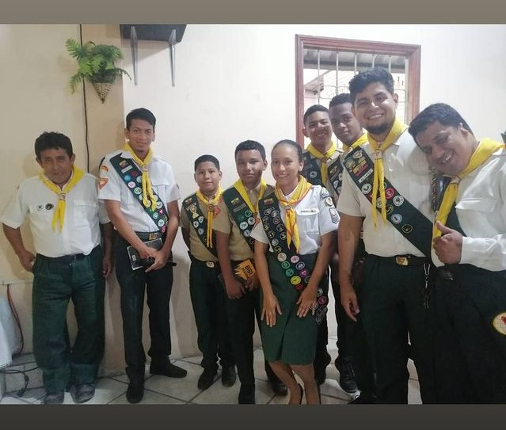

Eclesiastés 12:1


El Club de Conquistadores es un programa juvenil de la Iglesia Adventista del Séptimo Día con un enfoque en el desarrollo espiritual, físico y social de jóvenes entre 10 - 15 años. Este club ofrece una variedad de actividades, como campamentos, exploración al aire libre, estudio de la naturaleza, deportes, y manualidades, además de fomentar la participación en la comunidad y el crecimiento espiritual. Los Conquistadores se organizan en unidades, cada una dirigida por un consejero, y el club en su totalidad está liderado por un director. Además de las actividades recreativas, los miembros del club también aprenden habilidades prácticas, como primeros auxilios, orientación, y supervivencia en la naturaleza. A lo largo del tiempo, pueden obtener insignias o "especialidades" al completar ciertos desafíos y aprendizajes. El club también promueve valores como la honestidad, el respeto, la cooperación, y la fe, buscando formar jóvenes responsables y comprometidos tanto con su fe como con la sociedad.

♦ Clases Regulares.
📌Quinindé - Esmeraldas - Ecuador.